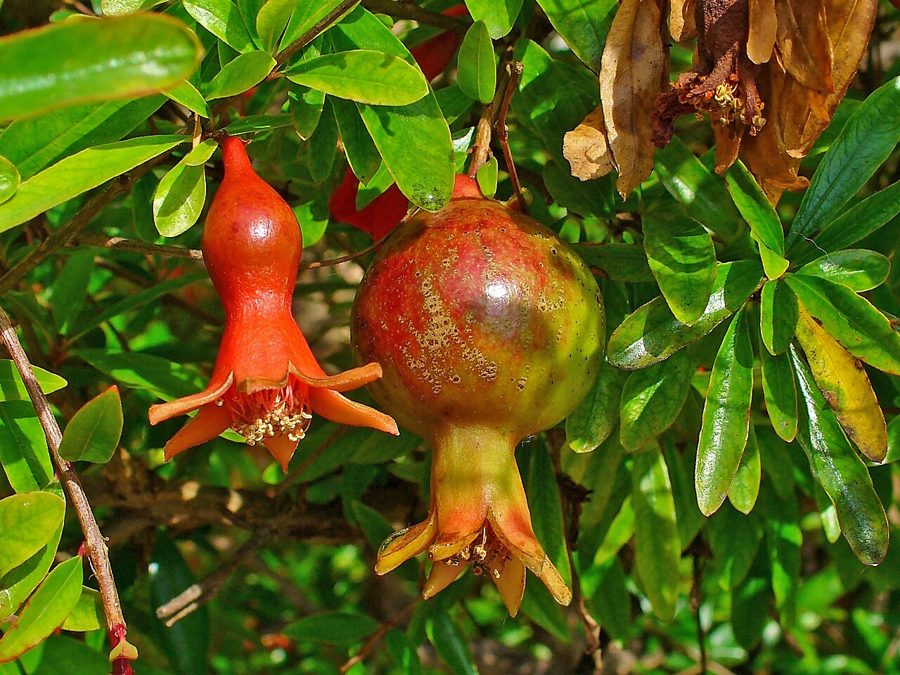

अनारPomegranate
Punica granatum · Lythraceae · FLR-0190

- Scientific name वैज्ञानिक नाम
- Punica granatum L.
- Family कुल
- Lythraceae
- Hindi हिंदी
- अनार
- Local names स्थानीय नाम
- anar, anaar, pomegranate, anar ka ped
- Status here यहाँ की स्थिति
- cultivated
- Movement आवागमन
- Resident, here all year
- IUCN IUCN
- not evaluated
- Review समीक्षा
- audited and independently read
When to look कब देखें
Expected mainly in February, March, April, May, June, July, August, September, October, November, December. मुख्यतः फ़रवरी, मार्च, अप्रैल, मई, जून, जुलाई, अगस्त, सितंबर, अक्टूबर, नवंबर, दिसंबर में अपेक्षित।
Uses and possibilities उपयोग और संभावनाएँ
“Traditional medicine” means a documented traditional use, not a claim that it works. Nothing on this page is medical advice.
Drawn from the documented uses in the profile below, where each is labelled traditional, current or a research lead. All uses →
अनार / Pomegranate
Punica granatum L. — Lythraceae
अनार — भारत के हर घर के बाग़ में उगने वाला एक छोटा, सुंदर, उपयोगी फल-वाला पेड़ है जिसके फल खट्टे-मीठे, दानेदार, और पौष्टिक होते हैं। पूर्वी उत्तर प्रदेश में यह अच्छी तरह उगता है। गर्मियों में इसके चमकीले नारंगी-लाल फूल बहुत सुंदर लगते हैं और मधुमक्खियों को खींचते हैं। फल गर्मियों की शुरुआत में तोड़ा जाता है और गुठलियों (अंदर की गूदेदार गुठली) को खाया जाता है, या रस निकाला जाता है। बीजों को निकालकर छायादार स्थान पर सुखाया जाता है और मसाले के रूप में रखा जाता है। आयुर्वेद में अनार का पूरा पेड़ (छाल, पत्तियाँ, फल, बीज) दस्त और दूसरी बीमारियों के इलाज में काम आता है।
Quick Identification त्वरित पहचान
| Feature | Description |
|---|---|
| Size | Deciduous shrub or small tree, 3–8 m, dense bushy crown, angular branches |
| Leaves | Opposite, simple, oblong-lanceolate, 2–8 cm, smooth, glossy green |
| Flowers | Showy, bright orange-red or scarlet, 2.5–4 cm diameter, solitary or clustered, May–June |
| Fruit | Round to oblong, 5–10 cm diameter, thick yellowish-red skin with a papery crown |
| Seeds | Numerous, embedded in translucent pink or red pulp (arils), sweet to tart |
| The test | Round fruit with thick skin and papery crown; many juicy seeds inside |
Field tip: Look for a bushy small tree with narrow glossy leaves, bright scarlet flowers in May, and round fruits with a crown-like top in August–September. The fruit is heavy and falls when ripe.
हिंदी — कैसे पहचानें: छोटा, झाड़ी सा पेड़, चमकीली पत्तियाँ, चमकीले नारंगी-लाल फूल, गोल फल सिरे पर मुकुट जैसा।
Morphology आकारिकी
Biometrics (cultivated trees, northern India):
| Measurement | Range |
|---|---|
| Height | 3–8 m |
| Trunk diameter | 10–30 cm |
| Leaf length | 2–8 cm |
| Flower diameter | 2.5–4 cm |
| Fruit diameter | 5–10 cm |
| Fruit weight | 100–300 g |
Trunk and bark: Multiple stems from base or short single trunk, bark grey, peeling in thin papery sheets. Wood dense, hard, pale yellow.
Leaves: Opposite (rarely subopposite), simple, oblong-lanceolate, 2–8 cm long, 1–3 cm wide, entire margin. Glossy dark green above, paler below. Deciduous in winter; brilliant yellow-red color before fall.
Flowers: Hermaphrodite and functionally male flowers on same plant. Calyx thick, leathery, bright orange-scarlet, with five lobes at apex (the "crown"). Petals five, wrinkled, scarlet to orange. Stamens numerous, conspicuous. Flowers borne singly or in clusters at branch ends, May–June. Pollinated by bees.
Fruit: A berrylike fruit 5–10 cm diameter, with a thick, leathery rind (epicarp) that is yellowish-red at ripeness and crowned with the persistent calyx lobes. Inside, chambers are separated by membranous walls filled with translucent gelatinous arils (the juicy seed-pulp) each containing one hard seed. The arils range from pale pink to deep red depending on cultivar.
हिंदी: पत्तियाँ छोटी, चिकनी, सर्दी में पीली पड़ जाती हैं। फूल नारंगी-लाल, चमकीले। फल गोल, मोटे छिलके वाला, शिखर पर मुकुट।
Behaviour & Ecology व्यवहार और पारिस्थितिकी
A tropical and subtropical deciduous fruit tree native to the region from Iran to northern India, cultivated worldwide. In the Basti plains it thrives, being drought-hardy and tolerant of poor soils. The tree grows moderately fast and produces flowers and fruit reliably. It tolerates winter temperatures down to -15°C though frost reduces flowering. Trees begin bearing in 2–3 years from budded stock and reach peak production at 7–10 years, yielding 20–50 kg per tree per season under good management.
Spring flowers are visited by Asian Honey Bee and bees. Ripe fruit attracts Indian Flying Fox, Common Myna, parakeets, and mynas. The fruit is heavy and falls when fully ripe.
हिंदी: पूर्वी उत्तर प्रदेश में अनार अच्छी फसल देता है। कम सेवा-सुविधा भी चाहिए। बसंत के फूल मधुमक्खियों को खींचते हैं। चमगादड़ और पक्षी फल खाते हैं।
Life Cycle / Phenology जीवन चक्र
| Month / season | Event |
|---|---|
| January–February | Winter dormancy; complete leaf fall in cold areas |
| February–March | New leaf flush (reddish turning green) |
| March–May | Flowering (peak May) |
| June–July | Fruit development |
| August–September | Fruit ripening (yellow-red rind) |
| September–October | Harvest; natural drop of ripe fruit |
| 2–3 years from graft | First commercial fruit |
Seeds remain viable for years if kept dry. Lifespan 50–100+ years.
हिंदी: सर्दी में पत्ती झड़ जाती है। बसंत में नई पत्ती और फूल। गर्मियों में फल, अगस्त-सितंबर में पक जाता है।
Associated Species / Interactions संबंधित प्रजातियाँ
- Pollinators: Asian Honey Bee, bees, and wasps on flowers.
- Fruit dispersers: Indian Flying Fox, Common Myna, Rose-ringed Parakeet.
- Companions: Often grown with Mango, Neem, and Jamun in older gardens.
Pests and Diseases कीट और रोग
- Leaf-eating caterpillars on young growth.
- Scale insects on older branches; controlled with oil spray.
- Heart rot (bacterial disease); affected fruits drop; ensure good drainage.
- Fruit spot (fungal); worse in wet years.
- Leaf spot fungi in monsoon; improves with pruning for air flow.
- Relatively pest-hardy compared to other fruit trees.
Agricultural / Human Relevance कृषि प्रासंगिकता
Traditional and ethnobotanical use:
The fruit arils are eaten fresh, and the juice is a refreshing beverage. The seeds (anardana) are dried and used as a spice or condiment. Historically the fruit has been central to Indian medicine.
Today. Pomegranate is a premium fruit crop, valued for fresh consumption and for juice. In Basti, smaller quantities are grown compared to mango or citrus, but it is a common homestead tree. Fruit is sold in bazaars at good prices.
Traditional medicine (documented uses; not medical advice): The fruit rind, fruit juice, and root bark are listed in Ayurvedic texts for astringent properties and for treating diarrhea and dysentery. The bark is used for parasites.
Nutritional value: High in vitamin C, antioxidants, and polyphenols. The juice has antimicrobial and anti-inflammatory properties documented in research.
हिंदी: अनार का रस गर्मियों में ठंडा करने वाला। बीज सूखाकर मसाला। पूरा पेड़ (छाल, पत्तियाँ, फल) दस्त आदि में आयुर्वेदीय दवा।
Expected Locally स्थानीय रूप से अपेक्षित
Not a field record. Written from published accounts for eastern Uttar Pradesh. No confirmed local sighting yet — if you have seen it, that is what the atlas needs.
अभी तक स्थानीय पुष्टि नहीं। यह विवरण प्रकाशित स्रोतों से है, किसी अवलोकन से नहीं।
Expected as a cultivated tree in village homestead gardens and small commercial orchards in Basti district. The plant is less common than mango or citrus but grows reliably. Best found in May when flowers are showy, or August–September when fruit is ripening. Any tree is worth recording with its location and fruit yield.
Distribution वितरण
Global range: Native to the region from Iran to northwestern India; now cultivated throughout the Mediterranean, India, and many subtropical regions.
In India: Cultivated in all plains and foothill states; commercial cultivation in Maharashtra, Rajasthan, and Karnataka.
In Uttar Pradesh: Present in all districts, common in homestead gardens.
In Basti district / eastern UP: Moderately common in village orchards and homestead gardens.
Research Questions शोध प्रश्न
Anyone can investigate these | कोई भी इन प्रश्नों की जाँच कर सकता है
- How many flowers does a pomegranate tree produce in May, and what percentage develop into fruit? — Mark flowering branches and count fruits at harvest.
- Does thinning young fruit increase the size of harvested fruit? — Thin half the fruits and compare.
- Can pomegranate seeds be dried and stored as a spice, and how long do they remain flavorful? / क्या अनार की गुठलियाँ सूखाकर मसाले के रूप में रखी जा सकती हैं, और कितने दिन तक ताज़ी रहती हैं? — Dry seeds and test flavor after 3, 6, and 12 months.
- What is the juice yield from fruit of different ripeness levels? — Extract juice from unripe, ripe, and overripe fruit and compare.
- Which birds visit pomegranate flowers and ripe fruit in your area? — Observe a flowering and fruiting tree.
Similar Species मिलती-जुलती प्रजातियाँ
| Species | How to tell apart | हिंदी |
|---|---|---|
| Guava (Psidium guajava) | Rough hairy leaves; white flowers; large yellow-green fruit with many small seeds | अमरूद — खुरदुरी पत्तियाँ, पीले फल, बहुत बीज |
| Wild pomegranate (Punica protopunica) | Smaller fruit, fewer arils, rare in cultivation; endemic to Socotra | दुर्लभ |
| Dwarf pomegranate (Punica granatum nana) | Ornamental, much smaller fruit, pink flowers; not commonly eaten | सजावटी, फल छोटा |
Field rule: A bushy deciduous tree with narrow glossy leaves, bright scarlet flowers in spring, and round thick-skinned fruit crowned at the apex with multiple juicy seed-arils inside is pomegranate.
Taxonomy & Classification वर्गीकरण
Original description. Carl Linnaeus described this species in 1753 in Species Plantarum (Vol. 2, p. 1056). The genus Punica is derived from the Latin name for the Carthaginians (Poeni = Phoenicians), as the fruit was known from Carthage; granatum means "many-seeded" (from Latin granum = grain/seed).
Subspecies. Monotypic, though many cultivars exist (Mollar, Bhagwa, Dholka, etc.).
Family and order placement. Lythraceae (loosestrife family), order Myrtales.
Phylogenetic notes. Punica is monotypic (genus has only one species), distinct from other fruit genera.
IUCN status rationale. Not evaluated. Widely cultivated; status in wild Middle Eastern populations unknown.
Photo Gallery फोटो गैलरी
Photos needed आवश्यक फोटो
- [ ] Whole tree in flower (पूरा पेड़, फूल सहित)
- [ ] Flowers, close-up (फूल)
- [ ] Ripe fruit on the tree (पका फल)
- [ ] Cut fruit showing arils (खुला फल)
No photos yet — add field photos to media/species/pomegranate/ and run node scripts/sync_photos.js.
References संदर्भ
- Linnaeus, C. (1753). Species Plantarum. Laurentius Salvius, Holmiae, Vol. 2, p. 1056.
- Hooker, J.D. (1875). The Flora of British India, Vol. 2. L. Reeve, London. (Punica)
- Duthie, J.F. (1903). Flora of the Upper Gangetic Plain. Government Printing, Calcutta.
- Brandis, D. (1906). Indian Trees. Archibald Constable & Co., London.
- ICAR (2021). Handbook of Horticulture. Indian Council of Agricultural Research, New Delhi.
- GBIF Occurrence Data — Punica granatum, India (2015–2026).
Source file: species/flora/trees/pomegranate.md